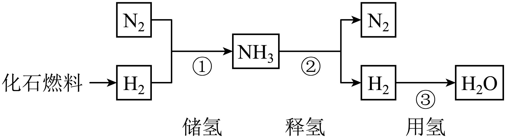
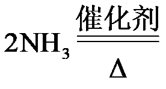
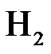
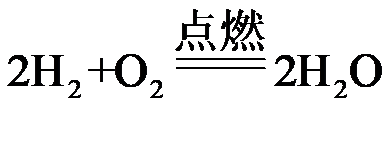
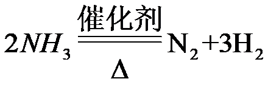

2023年北京中考化学 第31题 解析
31. 氢能是绿色能源。储氢、释氢、用氢过程中涉及的部分物质转化如下：

（1）化石燃料包括煤、石油和_____。
（2）①中，涉及到的物质属于单质的有_____。
（3）补全②的化学方程式：

__________。（4）③中，

可通过燃烧提供能量，反应的化学方程式为_____。【答案】（1）天然气 （2）N2、H2
（3） ①. N2 ②. 3H2
（4）

【解析】
【小问1详解】
化石燃料包括煤、石油和天然气；
【小问2详解】
①中，涉及到的物质为氮气、氢气和氨气，其中氮气和氢气均是由一种元素组成的纯净物，属于单质；
【小问3详解】
②中，氨气在催化剂和加热的条件下反应生成氮气和氢气，该反应的化学方程式为：

；【小问4详解】
③中，氢气与氧气点燃生成水，该反应的化学方程式为：。
【基本实验及其原理分析】